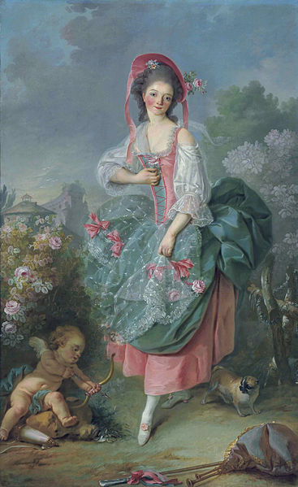
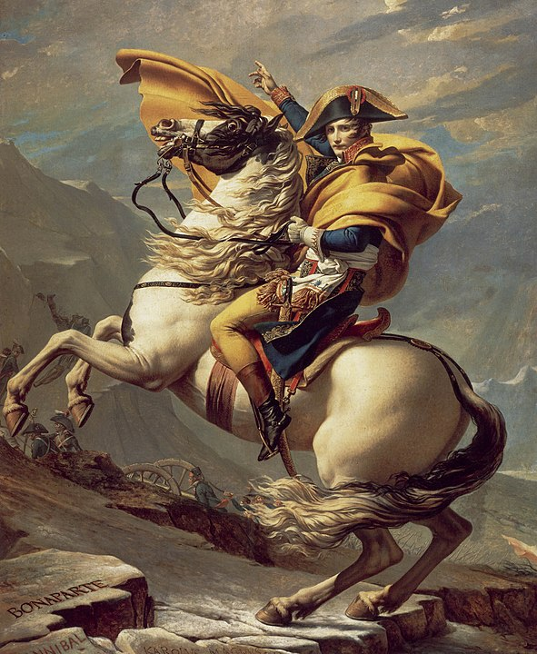

Self-portrait (1794)
Jacques-Louis David was a neoclassicist artist who links strongly to the French Revolution.
Besides being a painter, he was active in the political sphere and became friends with famous Revolutionary figures, such as Robespierre, Emmanuel-Joseph Sieyès and Jean-Paul Marat.
His paintings most often depicted stories from antiquity, but as we shall see, their morals quite often had a modern relevance.
Some have called Jacques-Louis David the 'painter of the French Revolution' for that reason; he was followed by poor people and high classes alike.

Mademoiselle Guimard as Terpsichore (1773-1775)
The French revolution sparked a change in the world of art.
Before, lush and decorative artworks of high class subjects were a common theme.
This style is called 'Rococo', and you see it back in this early painting by Jacques-Louis David.
The brushtrokes are gentle, and the shadows are not particularly well defined.
We see a famous French ballerina, Marie-Madeleine Guimard.
She is depicted as one of the nine Ancient muses: Terpsichore.
The ballerina had made her debut in an opera about this muse of dance in 1762.
Diana and Apollo Killing Niobe's Children (1772)
Jacques-Louis David was one of the artists that broke with the Rococo style, and portrayed themes from antiquity.
That artstyle is called Neoclassicism, and it began around 1760.
Some hallmarks of this style are simplicity, symmetry, confident lines, geometry and the inclusion of morals and stories.
Neoclassicist paintings tend to be darker, have harder shadows, and the main subject often contrasts with its surroundings.
Erasistratus Discovering the Cause of Antiochus' Disease (1774)
Jacques-Louis David had undergone a prestigious training under French artist Joseph marie Vien and in the Académie royale de peinture et de sculpture.
With this background, Jacques-Louis David was able to perform well at an early age.
This prize-winning painting of the Prix de Rome set Louis David on the map for royals and civilians alike.
Leonidas at Thermopylae (1814)
Many Neoclassicist artworks from French Revolutionary times underscored civic duties.
In this painting, Leonidas is fending off Persians with a mere 300 men at Thermopylae.
You can see Leonidas looking up, as if to accept his fate from the gods.
Oath of horatii (1784)
This is one of David's most famous works. Just like the previous painting, it underscores the importance of one's civic duties (An important virtue in the contemporary Enlightenment).
It presents 3 brothers who have to fight for their city. They give a Roman salute to their father, and stoicly plea to defend their city against its rival Alba Longa.
The Intervention of the Sabine Women (1799)
This painting portrays the first Roman king Romulus (right) and the king of the neighbouring Sabines (left) in an all-out battle against each other.
The central woman is both wife of Romulus and daughter of the king of Sabines.
She is commanding her loved ones to stop fighting, and stands over her three children.
The artwork was made a few years after the reign of Terror by Robespierre.
It seems that the artwork hints towards the unnecessary bloodshed among the Revolutionaries themselves.

Napoleon in the alps (1801)
Before Napoleon carried out a Coup d'état and become emperor of France he was friends with Jacques-Louis David.
David painted the French ruler on several occasions, and Napoleon was often delighted with David's work.
In fact, Napoleon assigned David as 'first painter' of France and commisioned artworks showing Napoleon's grandeur as general and ruler.
The Anger of Achilles (1825)
This is the last painting that Jacques-Louis David ever made.
It showcases Achilles' love Iphigenia.
The Gods had commanded her to be sacrificed, and so her parents take her to her death.
Achilles has his hand on the sword, but is incapacitated since Iphigenia said: "This is what my country requires of me, so let me go" .
It reflects on David's own position regarding France. He had fled to Belgium in exile and could not do anything about the restoration of the Ancien régime in 1815.
David's name is on Achilles' scabbard (sword case), and he is unable to do anything about the Bourbon monarchy.
His Revolutionary dreams are inactionable. (End of Gallery)